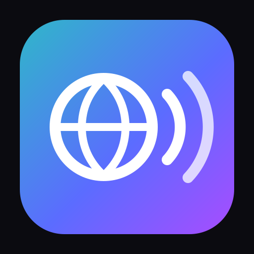

Weltkarte
WeltkarteLädt Sender …
Senderdaten kommen aus Radio Browser, einer freien, von der Community gepflegten Datenbank (radio-browser.info). Die Streams kommen direkt von den Sendern.
Karte: Leaflet, Kartenkacheln von Esri (Esri, HERE, Garmin, © OpenStreetMap-Mitwirkende).
Gezeigt werden nur Sender mit verschlüsselter Verbindung (https), die beim letzten Test erreichbar waren.
Keine Konten, keine Werbung, kein Tracking, kein eigener Server. Favoriten und Einstellungen bleiben nur auf diesem Gerät.
Dein Gerät fragt direkt bei Radio Browser, Esri (Kartenkacheln), unpkg (Kartenprogramm) und dem jeweiligen Sender an. Diese Dienste sehen dabei technisch deine IP-Adresse – wie bei jeder Website.
Weltradio · Version 1.0

Live-Radio aus aller Welt – tausende Sender, direkt vom Sender zu dir.
Wische nach oben: Jeder Sender kommt aus einem anderen Land und spielt sofort.
Jeder Punkt ist ein Sender. Antippen – und du hörst, was dort gerade läuft.